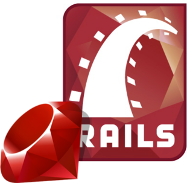
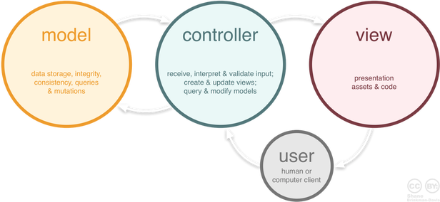

Introducción a Yii2
Ricardo Pérez López
IES Doñana, curso 2018-19
Frameworks, microframeworks y librerías
Ruby on Rails


Frameworks
Un framework es un software que proporciona una funcionalidad genérica que el programador puede cambiar selectivamente escribiendo código específico para una aplicación en particular.
Un framework proporciona una forma estándar de programar y desplegar aplicaciones.
Un framework es un entorno de software universal y reutilizable que proporciona funcionalidades concretas como parte de una plataforma software más grande para facilitar el desarrollo de aplicaciones.
Los frameworks pueden incluir programas de soporte, compiladores, librerías de código, conjuntos de utilidades y APIs que, juntos, forman los diferentes componentes que permiten desarrollar un proyecto o sistema.
Un framework se puede considerar como una aplicación genérica incompleta y configurable a la que podemos añadirle las últimas piezas para construir una aplicación concreta.

Objetivos de un framework
Los objetivos principales que persigue un framework son:
- Acelerar el proceso de desarrollo.
- Reutilizar código ya existente.
- Promover buenas prácticas de desarrollo, como el uso de patrones.
Frameworks para aplicaciones web
Un framework para aplicaciones web es un framework diseñado para facilitar el desarrollo de sitios web dinámicos, aplicaciones web y servicios web.
Este tipo de frameworks intenta aliviar el exceso de trabajo asociado con actividades comunes usadas en desarrollos web.
Por ejemplo, muchos frameworks proporcionan bibliotecas para acceder a bases de datos, estructuras para plantillas y gestión de sesiones, y con frecuencia facilitan la reutilización de código.
Ejemplos de frameworks web para PHP
- Symfony
- Laravel
- CakePHP
- CodeIgniter
- Yii
Ventajas
- El más popular, junto con Laravel
- Maduro y estable
- Especialmente indicado para proyectos grandes
- Mucha documentación
- Muy demandado
Inconvenientes
- Curva de aprendizaje algo pronunciada
- Con proyectos pequeños cuesta arrancar
- Su rendimiento no es especialmente alto

Ventajas
- Está de moda
- Gran comunidad de usuarios
- Muy demandado
Inconvenientes
- Curva de aprendizaje pronunciada
- Su rendimiento es bastante pobre
- Actualizaciones complejas

Ventajas
- Maduro y moderno al mismo tiempo
- Muchos elementos de serie
- Bien diseñado
- No es especialmente difícil de aprender
- Interesante equilibrio entre potencia, comunidad y facilidad de uso
Inconvenientes
- No es tan utilizado como otros frameworks (aunque tampoco es de los menos)
- Su rendimiento no es su principal baza (aunque tampoco es de los peores)
Ventajas
- Rendimiento espectacular
- Simple y sencillo
- Fácil de aprender
- Buena comunidad de entusiastas usuarios
Inconvenientes
- Demasiado sencillo (le faltan muchos componentes que ya vienen de serie en otros frameworks)
- No usa Composer ni es miembro del PHP-FIG.

Ventajas
- Excelente rendimiento
- Fácil de aprender
- Muy completo de serie
- Generador de código integrado incluyendo CRUD con Bootstrap
- Moderno en el desarrollo y uso de las últimas técnicas
Inconvenientes
- No tan conocido ni usado como otros frameworks
- Comunidad de usuarios no muy extensa en comparación con otros
Microframeworks
Un microframework es un término usado para referirse a un framework web minimalista, en contraste con un framework completo o full-stack.
Un microframework carece de muchas funcionalidades propias de un framework web completo, como por ejemplo:
- Cuentas de usuario, autenticación, autorización, roles, etc.
- Abstracción de bases de datos mediante mapeado objeto-relacional.
- Validación y saneado de la entrada.
- Motores de plantillas web.
Normalmente, un microframework se encarga de:
- Recibir una petición HTTP,
- Encaminar dicha petición al controlador adecuado,
- Despachar el controlador y
- Devolver una repuesta HTTP.
A menudo se diseñan específicamente para crear las API de otro servicio o aplicación.
Definición de microframework según Flask
“Micro” does not mean that your whole web application has to fit into a single Python file (although it certainly can), nor does it mean that Flask is lacking in functionality. The “micro” in microframework means Flask aims to keep the core simple but extensible. Flask won’t make many decisions for you, such as what database to use. Those decisions that it does make, such as what templating engine to use, are easy to change. Everything else is up to you, so that Flask can be everything you need and nothing you don’t.
By default, Flask does not include a database abstraction layer, form validation or anything else where different libraries already exist that can handle that. Instead, Flask supports extensions to add such functionality to your application as if it was implemented in Flask itself. Numerous extensions provide database integration, form validation, upload handling, various open authentication technologies, and more. Flask may be “micro”, but it’s ready for production use on a variety of needs.
Ejemplo de aplicación web con microframework
Usando Silex:
Ejemplos de microframeworks para PHP
- Slim
- Silex
- Lumen
- Fat-Free Framework
Frameworks vs. microframeworks
Las diferencias cada vez son menores y las fronteras son cada vez menos nítidas.
Hay frameworks full-stack que pueden funcionar como microframeworks usando algunos de sus componentes y prescindiendo de otros (por ejemplo: Yii).
Hay microframeworks a los que se les puede incorporar componentes hasta acabar teniendo la misma funcionalidad que un framework full-stack (por ejemplo: Symfony HttpKernel).
Frameworks vs. librerías
Los frameworks tienen tres características clave que los distinguen de las librerías:
- Inversión del control: En un framework, a diferencia de lo que pasa con las librerías o las aplicaciones normales de usuario, el flujo de control del programa viene dictado por el propio framework y no por el programa que lo usa.
- Extensibilidad: Un usuario puede extender el framework, normalmente sobreescribiendo código o añadiendo código especializado para proporcionar funcionalidades específicas.
- No modificable: El código del framework, por lo general, se supone que no se debe modificar, aunque admite extensiones desarrolladas por el programador que lo usa. En otras palabras: el programador usuario del framework puede ampliarlo, pero no modificar su código.
Además, los frameworks suelen imponer una estructura interna al código de la aplicación (en directorios, archivos y contenido de los mismos), mientras que las librerías no.
La diferencia más importante es que el control se invierte:
- Con una librería:
El código de la aplicación llama a la librería, por lo que el control lo tiene la aplicación.
- Con un framework:
El framework llama al código de la aplicación, por lo que el control lo tiene el framework.
Ejercicios
Usa la herramienta Google Trends para determinar la popularidad de los principales frameworks para PHP. ¿Cuál es el más popular? ¿Cuál ha tenido un crecimiento más rápido?
¿Crees que es importante la popularidad de un framework a la hora de seleccionarlo como herramienta de ayuda al desarrollo de un proyecto web?
Busca una comparativa de rendimiento de los principales frameworks para PHP y ordénalos según dicha comparativa. ¿Por qué hay algunos que son espectacularmente más rápidos que el resto?
¿Qué ventajas fundamentales tiene el framework Yii? ¿Cuál dirías que es su principal inconveniente?
Ídem para Laravel.
Investiga otros frameworks web para PHP.
Investiga otros frameworks web para otros lenguajes como Ruby o Python.
Investiga otros microframeworks para PHP.
Introducción, requisitos y puesta en marcha
¿Qué es Yii?
Yii es un framework de PHP de alto rendimiento, basado en componentes para desarrollar aplicaciones web modernas en poco tiempo. El nombre Yii significa “simple y evolutivo” en chino. También se puede considerar como un acrónimo de Yes It Is (que en inglés significa Sí, eso es).
¿En qué es mejor Yii?
Yii es un framework genérico de programación web, lo que significa que se puede utilizar para desarrollar todo tipo de aplicaciones web en PHP. Debido a su arquitectura basada en componentes y a su sofisticada compatibilidad de caché, es especialmente apropiado para el desarrollo de aplicaciones de gran envergadura, como portales, foros, sistemas de gestión de contenidos (CMS), proyectos de comercio electrónico, servicios web compatibles con la arquitectura REST y muchas más.
¿Cómo se compara Yii con otros frameworks?
- Como la mayoría de los framework de PHP, Yii implementa el patrón de diseño MVC (Modelo-Vista-Controlador) y promueve la organización de código basada en este patrón.
- La filosofía de Yii consiste en escribir el código de manera simple y elegante, sin sobrediseñar nunca por el mero hecho de seguir un patrón de diseño determinado.
- Yii es un framework completo que proporciona muchas características probadas y listas para usar, como los constructores de consultas y la clase ActiveRecord para las bases de datos relacionales y NoSQL, la compatibilidad con la arquitectura REST para desarrollar API, la compatibilidad de caché en varios niveles y muchas más.
- Yii es extremadamente extensible. Puedes personalizar o reemplazar prácticamente cualquier pieza de código de base, como se puede también aprovechar su sólida arquitectura de extensiones para utilizar o desarrollar extensiones distribuibles.
- El alto rendimiento es siempre la meta principal de Yii.
Versiones de Yii
Actualmente existen dos versiones principales de Yii:
- 1.1
- 2.0
Para la versión 1.1, que es de la generación anterior, actualmente sólo se ofrece mantenimiento. La versión 2.0 está completamente reescrita y adopta las últimas tecnologías y protocolos, incluidos Composer, PSR, espacios de nombres, traits, etc.
La versión 2.1 recibe actualmente el principal esfuerzo de desarrollo y se prevé que se publique en 2018.
Requisitos previos
Yii 2 requiere PHP 5.4.0 o una versión posterior. Se pueden encontrar requisitos más detallados de características individuales ejecutando el script de comprobación requirements.php incluido en cada versión de Yii.
Para utilizar Yii se requieren conocimientos básicos de programación orientada a objetos (POO), porque el framework Yii se basa íntegramente en esta tecnología.
Yii 2 hace uso también de las últimas características de PHP, como espacios de nombres y traits. Comprender estos conceptos ayuda a entender mejor Yii 2.
Instalación de Yii 2
La instalación estándar de Yii instala tanto el framework como una plantilla de proyecto.
Una plantilla de proyecto es un proyecto Yii funcional que implementa algunas características básicas como: login, formulario de contacto, etc.
Aunque no resulta imprescindible usar una plantilla, se recomienda encarcidamente usar una de las que proporciona Yii 2 como punto de partida para un nuevo proyecto.
Plantillas oficiales
Yii 2 proporciona dos plantillas oficiales:
- La plantilla básica (
yii2-app-basic) - La plantilla avanzada (
yii2-app-advanced).
La plantilla básica es adecuada para desarrollar el 90% de las aplicaciones web. Difiere de la plantilla avanzada principalmente en cómo está organizado el código.
A los principiantes en Yii 2 se les recomienda usar la plantilla básica por su sencillez y su funcionalidad.
Nosotros empezaremos usando la plantilla básica y luego pasaremos a usar una ligera variante.
Plantilla básica vs. avanzada
| Feature | Básica | Avanzada |
|---|---|---|
| Estructura de proyecto | ✓ | ✓ |
| Controlador Site | ✓ | ✓ |
| Login/logout de usuarios | ✓ | ✓ |
| Formularios | ✓ | ✓ |
| Conexión a BBDD | ✓ | ✓ |
| Comandos de consola | ✓ | ✓ |
| Asset bundles | ✓ | ✓ |
| Tests de Codeception | ✓ | ✓ |
| Twitter Bootstrap | ✓ | ✓ |
| Aplicaciones front-end y back-end | ✓ | |
| Modelo de usuario listo para usar | ✓ | |
| Registro de usuarios y recuperación de contraseñas | ✓ |
Instalación mediante Composer
Para crear un proyecto nuevo con la estructura de la plantilla básica:
$ composer create-project yiisoft/yii2-app-basic directorioCreará un directorio llamado directorio donde se volcará el contenido de la plantilla y quedará el proyecto listo para empezar su desarrollo.
Patrón Modelo-Vista-Controlador (MVC)
Visión general




Modelos
Los modelos representan la parte de la aplicación que implementa la lógica de negocio y las entidades de datos. Ésto significa que son responsables de la recuperación de datos convirtiéndolos en conceptos significativos para la aplicación, así como su procesamiento, validación, asociación y cualquier otra tarea relativa a la manipulación de dichos datos.
En general, representan los principales conceptos en torno a los cuales se desea implementar un programa.
Por ejemplo, en el caso de una red social, la capa de modelo se haría cargo de tareas tales como guardar datos del usuario, el amacenamiento de asociaciones con amigos, el almacenamiento y la recuperación de fotos de los usuarios, encontrar sugerencias de nuevos amigos, etc.
Por tanto, en este caso, los modelos podrían ser Amigo, Usuario, Comentario y Foto.
Vistas
Las vistas hacen una presentación de los datos de los modelos estando separadas de los mismos.
Por ejemplo, como los modelos devuelven un conjunto de datos, las vistas los usarían para hacer una página HTML que los contenga. O un resultado con formato XML o JSON para que otras aplicaciones puedan consumir.
Las vistas no se limitan únicamente a HTML o texto que represente los datos, sino que pueden ser utilizadas para ofrecer una amplia variedad de formatos en función de sus necesidades tales como videos, música, documentos y cualquier otro formato que se pueda imaginar.
Controladores
Los controladores gestionan las peticiones de los usuarios. Son responsables de responder a la información solicitada con la ayuda tanto de los modelos como de las vistas.
Los controladores pueden ser vistos como administradores cuidando de que todos los recursos necesarios para completar una tarea se deleguen a los trabajadores más adecuados. Espera peticiones de los clientes, comprueba su validez de acuerdo a las normas de autenticación o autorización, delega la búsqueda de datos a los modelos y selecciona el tipo de respuesta más adecuado según las preferencias del cliente. Finalmente delega este proceso de presentación a las vistas.
MVC en Yii 2
Los modelos son subclases de
yii\base\Model.- Un caso especial son las subclases de
yii\db\ActiveRecord.
- Un caso especial son las subclases de
Las vistas son plantillas (archivos
.php) que combinan HTML y PHP (y posiblemente JavaScript, CSS, etc.).Los controladores son subclases de
yii\base\Controller.En las aplicaciones web se usa
yii\web\Controller.En las aplicaciones de consola se usa
yii\console\Controller.
Ejercicios
¿Qué es un modelo?
¿Qué es una vista?
¿Qué es un controlador?
¿Qué componente (modelo, vista o controlador) se encargaría de las siguientes responsabilidades?
Comprobar si un pedido es válido.
Impedir que se pueda vender un producto sin existencias.
Atender la petición de alta de un nuevo usuario.
Solicitar los nuevos datos del producto durante una modificación del mismo.